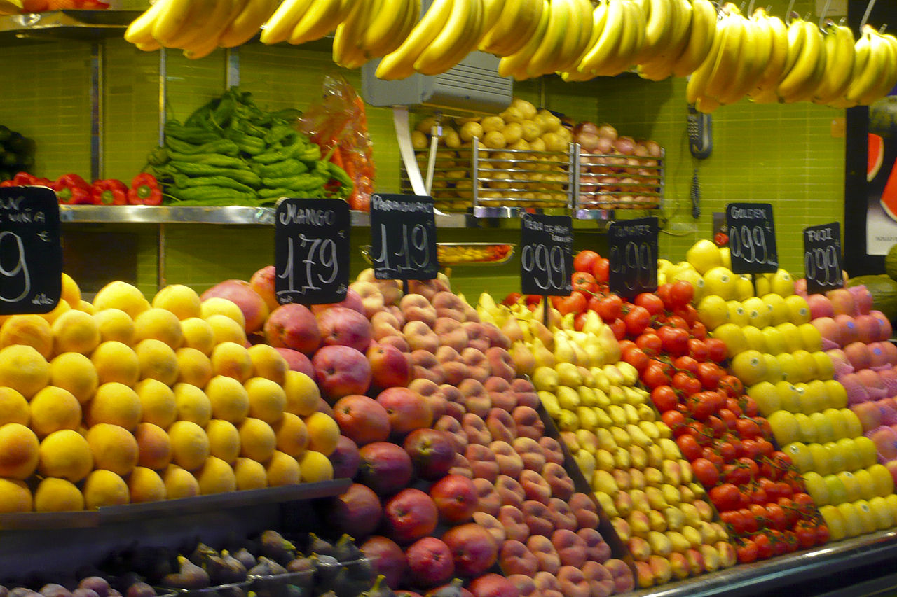

Jone's fruit stall making fruits business good again
12-5-2019 Monday / Albert Street
Jones’ fruit stall has been in operation at the corner of Church and Albert Street in downtown Belize City for the past four years, but he told the Reporter that over the course of fifteen years, due to a major fire downtown and more recent renovations, the family business has been relocated several times. Every morning at 4:00 a.m. Jones would get up and travel from his home in Sandhill Village to pick up his fresh fruits at the market. He would then head over to the location to prepare and bag off his goods and set up his wares for 6:00a.m. when commuters would start moving through the busy business strip. Jones told the Reporter that since he was a very small child he got interested in running the business because he noticed that every day he would be greeted with a new adventure and experience as he interacted and met new people.
